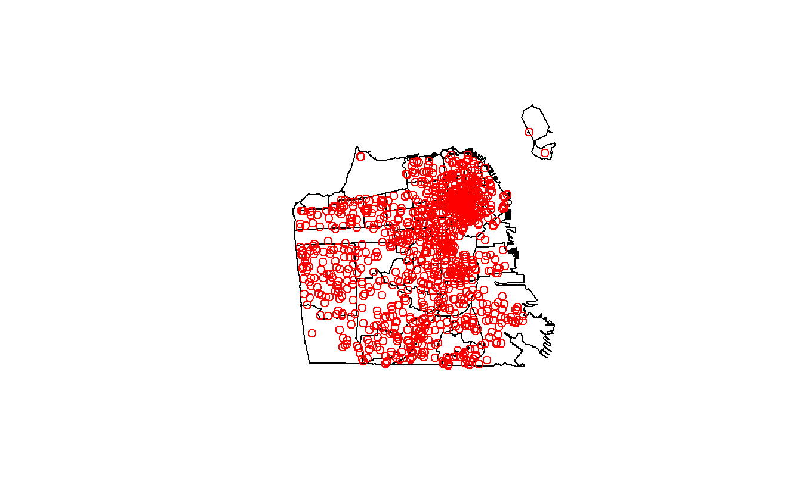

grep()gsub()[]{n}{n,m}$.+*|()?ggplot2
ggplot2
rvest
What we want to do with these neighborhoods is to find out which neighborhood each suicide occurred in and sum up the number of suicides per neighborhood. Once we do that we can make a map at the neighborhood level and be able to measure suicides-per-neighborhood. A spatial join is very similar to regular joins where we merge two data sets based on common variables (such as state name or unique ID code of a person). In this case it merges based on some shared geographic feature such as if two lines intersect or (as we will do so here) if a point is within some geographic area.
Right now our suicide data is in a data.frame with some info on each suicide and the longitude and latitude of the suicide in separate columns. We want to turn this data.frame into a spatial object to allow us to find which neighborhood each suicide happened in. We can convert it into a spatial object using the st_as_sf() function from sf. Our input is first our data, suicide. Then in the coords parameter we put a vector of the column names so the function knows which columns are the longitude and latitude columns to convert to a “geometry” column like we saw in sf_neighborhoods earlier. We’ll set the CRS to be the WGS84 standard we saw earlier but we will change it to match the CRS that the neighborhood data has.
We want our suicides data in the same projection as the neighborhoods data so we need to use st_transform() to change the projection. Since we want the CRS to be the same as in sf_neighborhoods, we can set it using st_crs(sf_neighborhoods) to use the right CRS.
Now we can take a look at head() to see if it was projected.
head(suicide)
#> Simple feature collection with 6 features and 12 fields
#> geometry type: POINT
#> dimension: XY
#> bbox: xmin: 5986822 ymin: 2091310 xmax: 6013739 ymax: 2117180
#> projected CRS: NAD83 / California zone 3 (ftUS)
#> IncidntNum Category Descript DayOfWeek Date
#> 1 180318931 SUICIDE ATTEMPTED SUICIDE BY STRANGULATION Monday 04/30/2018
#> 2 180315501 SUICIDE ATTEMPTED SUICIDE BY JUMPING Saturday 04/28/2018
#> 3 180295674 SUICIDE SUICIDE BY LACERATION Saturday 04/21/2018
#> 4 180263659 SUICIDE SUICIDE Tuesday 04/10/2018
#> 5 180235523 SUICIDE ATTEMPTED SUICIDE BY INGESTION Friday 03/30/2018
#> 6 180236515 SUICIDE SUICIDE BY ASPHYXIATION Thursday 03/29/2018
#> Time PdDistrict Resolution Address
#> 1 06:30:00 TARAVAL NONE 0 Block of BRUCE AV
#> 2 17:54:00 NORTHERN NONE 700 Block of HAYES ST
#> 3 12:20:00 RICHMOND NONE 3700 Block of CLAY ST
#> 4 05:13:00 CENTRAL NONE 0 Block of DRUMM ST
#> 5 09:15:00 TARAVAL NONE 0 Block of FAIRFIELD WY
#> 6 17:30:00 RICHMOND NONE 300 Block of 29TH AV
#> Location PdId year
#> 1 POINT (-122.45168059935614 37.72218061554315) 1.803189e+13 2018
#> 2 POINT (-122.42876060987851 37.77620120112792) 1.803155e+13 2018
#> 3 POINT (-122.45462091999406 37.7881754224736) 1.802957e+13 2018
#> 4 POINT (-122.39642194376758 37.79414474237039) 1.802637e+13 2018
#> 5 POINT (-122.46324153155875 37.72679184368551) 1.802355e+13 2018
#> 6 POINT (-122.48929119750689 37.782735835121265) 1.802365e+13 2018
#> geometry
#> 1 POINT (5997229 2091310)
#> 2 POINT (6004262 2110838)
#> 3 POINT (5996881 2115353)
#> 4 POINT (6013739 2117180)
#> 5 POINT (5993921 2093059)
#> 6 POINT (5986822 2113584)We can see it is now a “simple feature collection” with the correct projection. And we can see there is a new column called “geometry” just like in sf_neighborhoods. The type of data in “geometry” is POINT since our data is just a single location instead of a polygon like in the neighborhoods data.
Since we have both the neighborhoods and the suicides data let’s make a quick map to see the data.

Our next step is to combine these two data sets to figure out how many suicides occurred in each neighborhood. This will be a multi-step process so let’s plan it out before beginning. Our suicide data is one row for each suicide, our neighborhood data is one row for each neighborhood. Since our goal is to map at the neighborhood-level we need to get the neighborhood where each suicide occurred then aggregate up to the neighborhood-level to get a count of the suicides-per-neighborhood. Then we need to combine that with that the original neighborhood data (since we need the “geometry” column) and we can then map it.
We’ll start by finding the neighborhood where each suicide occurred using the function st_join() which is a function in sf. This does a spatial join and finds the polygon (neighborhood in our case) where each point is located in. Since we will be aggregating the data, let’s call the output of this function suicide_agg. The order in the () is important! For our aggregation we want the output to be at the suicide-level so we start with the suicide data. In the next step we’ll see why this matters.
Let’s look at the first 6 rows.
head(suicide_agg)
#> Simple feature collection with 6 features and 13 fields
#> geometry type: POINT
#> dimension: XY
#> bbox: xmin: 5986822 ymin: 2091310 xmax: 6013739 ymax: 2117180
#> projected CRS: NAD83 / California zone 3 (ftUS)
#> IncidntNum Category Descript DayOfWeek Date
#> 1 180318931 SUICIDE ATTEMPTED SUICIDE BY STRANGULATION Monday 04/30/2018
#> 2 180315501 SUICIDE ATTEMPTED SUICIDE BY JUMPING Saturday 04/28/2018
#> 3 180295674 SUICIDE SUICIDE BY LACERATION Saturday 04/21/2018
#> 4 180263659 SUICIDE SUICIDE Tuesday 04/10/2018
#> 5 180235523 SUICIDE ATTEMPTED SUICIDE BY INGESTION Friday 03/30/2018
#> 6 180236515 SUICIDE SUICIDE BY ASPHYXIATION Thursday 03/29/2018
#> Time PdDistrict Resolution Address
#> 1 06:30:00 TARAVAL NONE 0 Block of BRUCE AV
#> 2 17:54:00 NORTHERN NONE 700 Block of HAYES ST
#> 3 12:20:00 RICHMOND NONE 3700 Block of CLAY ST
#> 4 05:13:00 CENTRAL NONE 0 Block of DRUMM ST
#> 5 09:15:00 TARAVAL NONE 0 Block of FAIRFIELD WY
#> 6 17:30:00 RICHMOND NONE 300 Block of 29TH AV
#> Location PdId year
#> 1 POINT (-122.45168059935614 37.72218061554315) 1.803189e+13 2018
#> 2 POINT (-122.42876060987851 37.77620120112792) 1.803155e+13 2018
#> 3 POINT (-122.45462091999406 37.7881754224736) 1.802957e+13 2018
#> 4 POINT (-122.39642194376758 37.79414474237039) 1.802637e+13 2018
#> 5 POINT (-122.46324153155875 37.72679184368551) 1.802355e+13 2018
#> 6 POINT (-122.48929119750689 37.782735835121265) 1.802365e+13 2018
#> nhood geometry
#> 1 Oceanview/Merced/Ingleside POINT (5997229 2091310)
#> 2 Hayes Valley POINT (6004262 2110838)
#> 3 Presidio Heights POINT (5996881 2115353)
#> 4 Financial District/South Beach POINT (6013739 2117180)
#> 5 West of Twin Peaks POINT (5993921 2093059)
#> 6 Outer Richmond POINT (5986822 2113584)There is now the nhood column from the neighborhoods data which says which neighborhood the suicide happened in. Now we can aggregate up to the neighborhood-level.
For now we will use the code to aggregate the number of suicides per neighborhood. Remember, the aggregate() command aggregates a numeric value by some categorical value. Here we aggregate the number of suicides per neighborhood. So our code will be
aggregate(number_suicides ~ nhood, data = suicide_agg, FUN = sum)
We actually don’t have a variable with the number of suicides so we need to make that. We can simply call it number_suicides and give it that value of 1 since each row is only one suicide.
Now we can write the aggregate() code and save the results back into suicide_agg.
Let’s check a summary of the number_suicides variable we made.
summary(suicide_agg$number_suicides)
#> Min. 1st Qu. Median Mean 3rd Qu. Max.
#> 1.00 15.00 24.00 33.08 38.50 141.00The minimum is one suicide per neighborhood, 33 on average, and 141 in the neighborhood with the most suicides. So what do we make of this data? Well, there are some data issues that cause problems in these results. Let’s think about the minimum value. Did every single neighborhood in the city have at least one suicide? No. Take a look at the number of rows in this data, keeping in mind there should be one row per neighborhood.
And let’s compare it to the sf_neighborhoods data.
The suicides data is missing 2 neighborhoods. That is because if no suicides occurred there, there would never be a matching row in the data so that neighborhood wouldn’t appear in the suicide data. That’s not going to be a major issue here but is something to keep in mind in future research.
The data is ready to merge with the sf_neighborhoods data. We’ll introduce a new function that makes merging data simple. This function comes from the dplyr package so we need to install and tell R we want to use it using library().
library(dplyr)
#>
#> Attaching package: 'dplyr'
#> The following objects are masked from 'package:stats':
#>
#> filter, lag
#> The following objects are masked from 'package:base':
#>
#> intersect, setdiff, setequal, unionThe function we will use is left_join() which takes two parameters, the two data sets to join together.
left_join(data1, data2)
This function joins these data and keeps all of the rows from the left data and every column from both data sets. It combines the data based on any matching columns (matching meaning same column name) in both data sets. Since in our data sets, the column nhood exists in both, it will merge the data based on that column.
There are two other functions that are similar but differ based on which rows they keep.
left_join() - All rows from Left data and all columns from Left and Right dataright_join() - All rows from Right data and all columns from Left and Right datafull_join() - All rows and all columns from Left and Right dataWe could alternatively use the merge() function which is built into R but that function is slower than the dplyr functions and requires us to manually set the matching columns.
We want to keep all rows in sf_neighborhoods (keep all neighborhoods) so we can use left_join(sf_neighborhoods, suicide_agg). Let’s save the results into a new data.frame called sf_neighborhoods_suicide.
If we look at summary() again for number_suicides we can see that there are now 2 rows with NAs. These are the neighborhoods where there were no suicides so they weren’t present in the suicide_agg data.
summary(sf_neighborhoods_suicide$number_suicides)
#> Min. 1st Qu. Median Mean 3rd Qu. Max. NA's
#> 1.00 15.00 24.00 33.08 38.50 141.00 2We need to convert these values to 0. We will use the is.na() function to conditionally find all rows with an NA value in the number_suicides column and use square bracket notation to change the value to 0.
Checking it again we see that the minimum is now 0 and the mean number of suicides decreases a bit to about 31.5 per neighborhood.